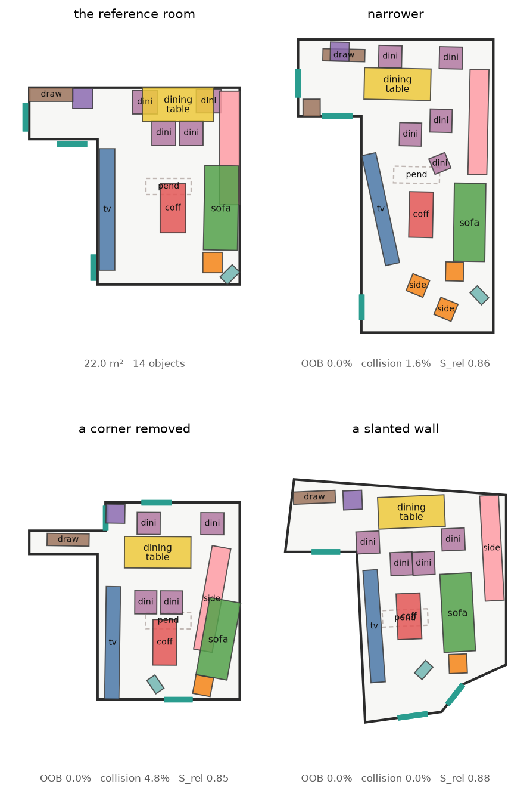
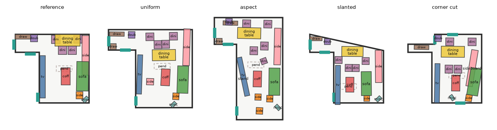
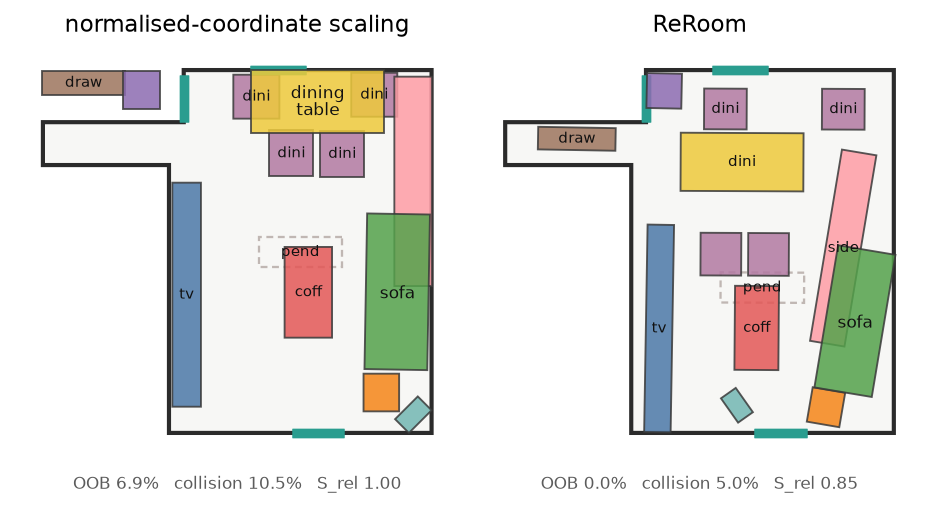
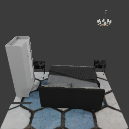
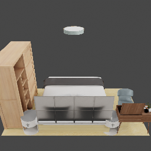

The identity of a room is a hierarchy of relations with different physical rigidity, not a set of coordinates — so a design is transferred by deciding what to preserve, what to stretch, and what to give up
Preprint
Given photographs of a room somebody likes and a target floor plan of a different size, aspect ratio or shape, we produce an editable 3D furniture arrangement that is physically placeable in the target and preserves the reference's furniture composition, spatial relations, design motifs and visual style. The working hypothesis is that a room's identity does not live in absolute coordinates but in a hierarchy of relations with different physical rigidity: a nightstand beside a bed is fixed by the human body, a sofa facing a television may stretch with the room. The system therefore treats retargeting as joint placement, selection and substitution under hard geometric constraints, rather than as an affine map of the source layout.
Across 1 000 held-out retargetings, normalised-coordinate scaling leaves 8.8 % of furniture area outside the target room and 5.8 % in collision; ReRoom leaves 0.38 % and 0.57 %. Combined physical legality rises from 0.636 to 0.880. When the target is smaller than the reference — the case the method exists for — the coordinate map collapses to 0.472 legality while ReRoom holds 0.858. Running a released floor-plan-conditioned generator (PhyScene, CVPR 2024) on the same rooms and scoring both with one evaluator, ReRoom has 3.5× fewer colliding objects and 5× fewer objects outside the floor plan at the same object count — and loses on free-space connectivity, which we diagnose rather than tune away.

Somebody sees a room they like in a photograph and wants it in their own apartment. Their apartment is not that room: it is narrower, or L-shaped, or has a wall at an angle. What should happen to the design?
The naive answer — normalise the source coordinates by the source bounding box and paste them into the target — is what a coordinate map does, and it fails in a specific, measurable way. It preserves every relation perfectly, including the relation between a wardrobe and a wall that is no longer there. Measured over 1 000 retargetings it puts 8.8 % of the furniture area outside the room. It is not a weak baseline for lack of effort; it is the strongest possible method on relation preservation, and that is exactly why it is unusable.
The opposite answer — ignore the reference and synthesise a layout for the floor plan — is physically excellent and semantically empty. In our experiments it reaches the best legality of any method (0.919) and the worst motif preservation of any method that looks at the reference at all (0.859 against 0.942).
Four groups of work sit near this problem, and each is missing one of its pieces. Scene retargeting moves a complete 3D exemplar into a differently sized room, but takes the source as given 3D geometry and does not read design intent from photographs. Image-to-3D scene reconstruction (MIDI [5], GenRecon [4]) recovers compositional 3D instances from images, but reconstructs the room it was shown rather than adapting it to new floor geometry. Floor-plan-conditioned generation (PhyScene [11], CHOrD [7]) produces plausible layouts for a given outline, but from a learned prior rather than from a particular reference room. Reference- or instruction-conditioned generation (SAGE [3], InstructScene [9], Holodeck [10]) conditions on a reference or a description, but targets semantic coherence rather than preservation of a specific spatial design.
The gap is the composition: no prior system takes photographs of a room and a differently shaped floor plan and returns an editable arrangement that preserves the first inside the second.
The reference room is parsed into a graph whose nodes are object instances and whose edges are spatial and functional relations — near, facing, aligned, support, against-wall, symmetric, grouped-with. Objects are then clustered into motifs: a bed with its two nightstands, a dining table with its chairs, a sofa with a coffee table and a television. The motif layer exists because deleting a dining table and leaving six chairs is geometrically legal and semantically absurd; selection has to happen at the level of the functional group.
Each relation carries an elasticity \(\alpha_r \in [0,1]\) governing how its target distance responds when the room rescales by \(\gamma\):
with \(c\) the categories, \(\rho\) the relation type, \(m(\cdot)\) the motif membership and \(g(P)\) a floor-geometry descriptor. Fitted on 524 000 relations harvested from the corpus, \(f_\psi\) recovers the expected ordering without being told it: chair–table 0.05 (pinned by the human body), bed–wardrobe 0.63–0.87 (free to move apart).
Every object gets a decision variable \(y_i = (k_i, a_i, x_i, y_i, \theta_i, s_i)\): whether it is kept, which asset realises it, where it sits, how it is turned, and a bounded footprint trim. Retargeting therefore contains placement + selection + substitution at once, and minimises
The objective is implemented twice. An exact form computes areas with real polygon
intersection and decides the winner; a differentiable surrogate — a floor signed
distance field sampled by grid_sample, separating-axis penetration depth for oriented
boxes — is optimised by batched Adam over random restarts. The surrogate proposes; the exact
energy disposes. Non-differentiable quantities such as free-space connectivity can therefore still
enter the selection, which turns out to matter and to be insufficient (§6).
When the target is smaller, capacity planning drops whole motifs or prunes structurally within them (six dining chairs become four) rather than deleting objects by score. When the target is larger, the plan's own principle is that a bigger room is filled by adding furniture, not by stretching what is there — and enforcing that principle turned out to require two fixes that the measurements found for us (§4.3).
User constraints \(C_t\) are hard: an object the user pins keeps its pose exactly and can never be dropped, and floor the user marks as no-go is punched out of the signed distance field the boundary term reads, so a no-go zone has a wall's gradient.

All numbers are measured on held-out 3D-FRONT rooms under one protocol on one machine. Two rows are anchors rather than methods: source reference is the design scored in its own room, the ceiling for preservation; it is also the floor for feasibility, because professionally designed rooms are not collision-free either.
Table 1 — Oracle retargeting, 200 held-out rooms × 5 deformation levels (n = 1000)
| method | ROOB ↓ | Rcol ↓ | clearance ↓ | Srel ↑ | Smotif ↑ | legality ↑ | score ↑ |
|---|---|---|---|---|---|---|---|
| source reference (anchor) | 0.0222 | 0.0597 | 0.2690 | 1.0000 | 1.0000 | 0.6888 | 0.8135 |
| reference, copied rigidly | 0.1193 | 0.0597 | 0.2984 | 1.0000 | 1.0000 | 0.6048 | 0.7544 |
| normalised-coordinate scaling | 0.0877 | 0.0578 | 0.2865 | 0.9637 | 1.0000 | 0.6360 | 0.7703 |
| best-fit affine | 0.1107 | 0.0573 | 0.2956 | 0.9646 | 1.0000 | 0.6142 | 0.7567 |
| floor plan only, reference ignored | 0.0030 | 0.0017 | 0.0781 | 0.7122 | 0.8586 | 0.9186 | 0.8419 |
| relation-aware only | 0.0075 | 0.0134 | 0.1587 | 0.8775 | 0.9848 | 0.8299 | 0.8679 |
| + motif summarisation and population | 0.0043 | 0.0059 | 0.1281 | 0.8098 | 0.9400 | 0.8650 | 0.8630 |
| ReRoom, full | 0.0038 | 0.0057 | 0.1138 | 0.8110 | 0.9417 | 0.8796 | 0.8705 |
Read the two extremes first. The coordinate maps score near-perfectly on relation preservation because they preserve every relation, including into walls. The floor-plan-only synthesiser is the most physically legal method there is because it owes the reference nothing. Neither is a strawman; each is the best possible method on one axis and the worst on the other.
Table 2 — Where the trade actually bites: by target/source area ratio
| method | target smaller (< 0.9×) | target larger (> 1.1×) | ||||
|---|---|---|---|---|---|---|
| legality | Srel | Smotif | legality | Srel | Smotif | |
| normalised-coordinate scaling | 0.472 | 0.972 | 1.000 | 0.760 | 0.934 | 1.000 |
| ReRoom, full | 0.858 | 0.685 | 0.865 | 0.917 | 0.867 | 0.983 |

Table 3 — Removing one component at a time (150 rooms × 5 levels)
| variant | legality ↑ | Srel ↑ | Smotif ↑ | score ↑ |
|---|---|---|---|---|
| ReRoom, full | 0.8858 | 0.8136 | 0.9405 | 0.8737 |
| no relation elasticity (α := 0) | 0.8892 | 0.8126 | 0.9355 | 0.8731 |
| hand-specified α | 0.8844 | 0.8136 | 0.9413 | 0.8731 |
| no motif-rigid initialisation | 0.8769 | 0.8276 | 0.9385 | 0.8717 |
| substitution by size alone | 0.8877 | 0.8135 | 0.9408 | 0.8745 |
| no feasibility projection | 0.8574 | 0.8285 | 0.9399 | 0.8627 |
| no motif layer at all | 0.9006 | 0.7781 | 0.9037 | 0.8559 |
| flow-matching proposal, projected | 0.8038 | 0.8277 | 0.9480 | 0.8347 |
| flow-matching proposal, unprojected | 0.6271 | 0.9026 | 0.9589 | 0.7496 |
Deleting the motif layer costs more than deleting anything else. Not the motif-rigid
initialisation — the layer itself: no groups, no motif-to-motif relations, no
grouped-with edges, no motif-level selection, while still being scored against
the intact reference graph. Its legality is the best in the table, which is not a contradiction but
the trade priced: a solver with no obligation to keep a dining set together has more freedom to
satisfy geometry. Keeping the group is what that freedom is spent on.
Relation elasticity is a well-supported description that is nearly inert as a lever. On the full grid it is worth +0.0006 of the joint score. Isolating the regime where it can bite — strong uniform rescalings — it moves the score from 0.7069 to 0.7103 and cuts the error on the elastic relations it targets from 0.142 to 0.130. The reason it cannot do more is structural: the objective is dominated by preservation versus feasibility, and α only redistributes weight inside the preservation half. We report it as a finding about how designed rooms scale rather than as the engine of the method, and the engine is the motif layer.
The formulation's front end is a photograph, so the pipeline was measured with a real parser in place of the ground-truth graph. MIDI-3D [5] reconstructs compositional instances from one image; GenRecon [4] reconstructs whole scene geometry from many. Both were run here, on the same 14 rooms, with every simulated noise level recomputed over that same sample.
Table 4 — Retargeting quality against source-perception quality (n = 42 per row)
| source | Srel ↑ | Smotif ↑ | legality ↑ | score ↑ |
|---|---|---|---|---|
| ground-truth graph | 0.8449 | 0.9483 | 0.8668 | 0.8785 |
| simulated noise, light | 0.7815 | 0.9114 | 0.8567 | 0.8454 |
| simulated noise, medium | 0.7147 | 0.8552 | 0.8605 | 0.8123 |
| simulated noise, heavy | 0.5251 | 0.8165 | 0.8708 | 0.7548 |
| simulated noise, severe | 0.3098 | 0.5543 | 0.8749 | 0.5898 |
| GenRecon, 24 views | 0.4488 | 0.6955 | 0.8527 | 0.6592 |
| MIDI-3D, 1 view | 0.2505 | 0.4521 | 0.8744 | 0.5242 |
The same parses paired with the coordinate map instead separate the two stages completely: at the oracle, direct scaling reaches Srel 0.955 with legality 0.589; with MIDI it reaches 0.358 with legality 0.411 — the worst cell in the study. Perception quality drives preservation and barely touches legality; the layout stage drives legality and cannot invent fidelity the parser threw away.
An ablation that does less should not beat the full system, and for a while one did. Auditing why produced two fixes, both of the same shape — a stage that fired without checking that it helped.
Population had no acceptance test. Summarisation is checked by the repair loop and substitution by its own size-gain test; whatever the population planner proposed was simply appended. Over 180 (scene, level) pairs it cost 0.020 of the joint score and 0.014 of legality wherever it fired, while buying no feasibility at all. Additions are now re-admitted one at a time, largest first, and only while they cost nothing in \(E_{\text{bound}}+E_{\text{col}}+E_{\text{clear}}\): 6.0 proposed becomes 3.2 kept.
Substitution was upsizing when the room grew. The requested asset size scaled with the square root of the area ratio, up to 1.4×, which is the same mistake as spreading furniture apart: in rooms above 1.3× it cost 0.041 of legality and pushed clearance violation from 0.058 to 0.098, because larger furniture eats exactly the circulation space the extra floor was supposed to provide.
Together the two moved the full system from 0.8641 to 0.8737 against the reduced variant's 0.8721, and every metric improved at once — out-of-bounds, collision, clearance, door blockage, reachability, Srel, Smotif and retention. Eight up and none down is the signature of removing a defect rather than re-tuning a trade-off.
Table 5 — What obeying the user costs (60 rooms, level-3 deformation)
| setting | obeyed | legality ↑ | Srel ↑ | score ↑ |
|---|---|---|---|---|
| unconstrained | — | 0.8504 | 0.8688 | 0.8820 |
| one pinned object | 100 % exact | 0.8140 | 0.8334 | 0.8464 |
| a forbidden quarter of the floor | 93 % of intrusion removed | 0.7581 | 0.7813 | 0.7964 |
Getting to 100 % took four fixes, all the same shape as the two above: a hard constraint that some other code path quietly re-randomised — the affine restart candidate, the jitter that re-seeds restarts after a repair, wall snapping, the clamp into the room. The gradient freeze holds a pinned object where it starts, so anything that moved its starting point defeated it.
Of the neighbouring systems, one could be run here end to end. PhyScene [11] is floor-plan-conditioned generation on the same dataset and reports physical-plausibility metrics that overlap ours. Its released weights and sampler were used to generate 256 living rooms; its outputs were converted into our scene representation; and three things were then held fixed so that the comparison is a comparison: the rooms (the same test-split floor plans it generated into), the object vocabulary (our reference scenes rebuilt from the same cached boxes it trains on), and the evaluator (one implementation scores both sides).
Table 6 — Same rooms, same vocabulary, one evaluator (n = 256)
| method | Colobj ↓ | Colscene ↓ | Rout ↓ | Rwalkable ↑ | Rreach ↑ | objects |
|---|---|---|---|---|---|---|
| 3D-FRONT, real rooms (anchor) | 0.366 | 0.793 | 0.063 | 0.970 | 0.889 | 11.4 |
| PhyScene | 0.391 | 0.840 | 0.119 | 0.961 | 0.872 | 11.6 |
| ReRoom | 0.113 | 0.336 | 0.024 | 0.905 | 0.889 | 11.4 |
| ReRoom, reference from a different room | 0.030 | 0.154 | 0.039 | 0.870 | 0.865 | 13.2 |
| ReRoom, reference ignored | 0.001 | 0.008 | 0.016 | 0.908 | 0.932 | 11.4 |
Colliding objects fall from 0.391 to 0.113 and objects outside the floor plan from 0.119 to 0.024, at the same object count. PhyScene is not a weak comparison here: it sits about where the real 3D-FRONT rooms sit, which is what a generative prior trained on them should do. The fourth row exists because the obvious version of this table is unfair — giving ReRoom the reference of the very room it is furnishing is an information advantage the generator does not have, so that row transfers a different living room's design into the floor plan, which is also the actual use case.
The chain from their published numbers to ours has two links and only one is tight. Their generator re-run here and scored by their script gives Rout 0.130 against a published 0.219, Rwalkable 0.831 against 0.815, Rreach 0.821 against 0.771 — the right neighbourhood, the gaps explained by 200 generated scenes rather than 1 000. Those same scenes scored by our evaluator give Rout 0.119 against their 0.130, which is tight, but Rwalkable 0.961 against 0.831, which is not.
InstructScene [9] reports FID, KID and SCA on Blender renders and ships the real reference images, so those columns look comparable. They are not, and the reason is measurable rather than rhetorical. Rendering our scenes through their pipeline needed four fixes — the scene must stay in 3D-FRONT's native y-up frame, the floor is part of the scene, trimesh does not attach the texture when it parses 3D-FUTURE's material, and their own texture-renaming step misses whenever the asset's material already has a name, which for 3D-FUTURE is always. With all four fixed the renders are of the same character as theirs. Then:
Table 7 — Why the FID columns cannot be compared
| comparison | FID |
|---|---|
| their real renders, half A against half B (pure sampling noise) | 13.29 |
| identical real scenes through our pipeline, against theirs | 46.36 |
| ours, retargeting into the room's own floor plan | 45.37 |
| ours, retargeting into a deformed floor plan | 43.67 |
Identical scene content, different renderer, 46.4 — three and a half times the sampling noise floor. The spread between our three sets is 2.7, a fifth of that floor. The layout signal is buried by a residual we could not remove without their exact Blender version, sample count, view count and per-room-type image counts, none of which are in the repository. Under a single renderer the metric does discriminate (3.93 against 10.66 for the two settings); against their published table it does not, and we report that rather than a number that looks like a comparison.

ours, their renderer

their shipped reference
ReRoom reaches Rwalkable 0.905 against PhyScene's 0.961 and the real rooms' 0.970. Placing furniture legally is not the same as leaving the floor connected. Two attempts were made and both are reported because the second explains the first.
The gap was first read as pinches, gaps too narrow to walk through, and ReRoom does have more of them (11.2 per room against 9.2 and 9.4). Giving the clearance shortfall a saturating rather than quadratic shape — a 0.30 m gap and a 0.05 m gap are equally unwalkable when 0.45 m is needed — moved Rwalkable from 0.896 to 0.901 and left the gap count higher. The diagnosis was wrong: the count included same-motif pairs, which are supposed to be close and are not charged, and the correlation behind it explained 8 % of the variance.
Table 8 — Weighting the term that is responsible
| λfunc-reach | Rwalkable ↑ | Colobj ↓ | legality ↑ | score ↑ |
|---|---|---|---|---|
| 2 (shipped) | 0.897 | 0.097 | 0.821 | 0.881 |
| 20 | 0.923 | 0.177 | 0.695 | 0.804 |
| 80 | 0.925 | 0.198 | 0.647 | 0.772 |
Walkability rises to 0.925 and stops, well short of 0.972, while collisions double. Raising its weight makes the ranker prefer a better-connected layout among candidates none of which was optimised for connectivity — it selects, it does not optimise.
A second diagnosis reached deeper and is the more useful one. The narrow gaps that disconnect the floor are mostly between furniture and walls, not between pieces of furniture: 29.7 % of wall-seeking objects end up flush against a wall against 75.0 % in the real rooms, with the rest stranded at a median 0.19 m. The cause is that only 31.2 % of them receive a wall term at all — the detector requires an object's back face to point at the wall within 35°, which rejects a bookshelf standing side-on, a sofa at an angle, or anything whose front axis the parser got wrong. Widening it to a footprint-touches-wall test raises coverage to 93.6 % and, with a saturating flush term, takes wall-hugging to 79.2 % and the median gap to 0.04 m — both matching the real rooms, and Rwalkable to 0.901.
It is not the shipped path, and the reason is measured: E_wall scores the distance
from an object's rear-face midpoint to the wall, which is not a meaningful quantity for an
object standing side-on, so the target gap is wrong and the optimiser drives the object through the
wall — out-of-plan area triples. The fix and the connectivity gap share one root: several
energy terms are defined for the back-against-wall case and degrade on everything else. Rewriting
E_wall in terms of footprint-to-wall distance, differentiably, is the concrete next
step both point to. Both knobs ship off, documented, and the setting stays where the joint score is
highest.
Across the eight core metrics of Table 1, no method Pareto-dominates any other; all seven sit on the frontier. What is claimed is a position on it:
Table 9 — Distance from the best achieved value on each axis
| method | legality | Smotif | worse axis, as % of best |
|---|---|---|---|
| ReRoom, full | 0.880 | 0.942 | 94.2 % |
| + summarisation, no substitution | 0.865 | 0.940 | 94.0 % |
| relation-aware only | 0.830 | 0.985 | 90.3 % |
| floor plan only | 0.919 | 0.859 | 85.9 % |
| normalised-coordinate scaling | 0.636 | 1.000 | 69.2 % |